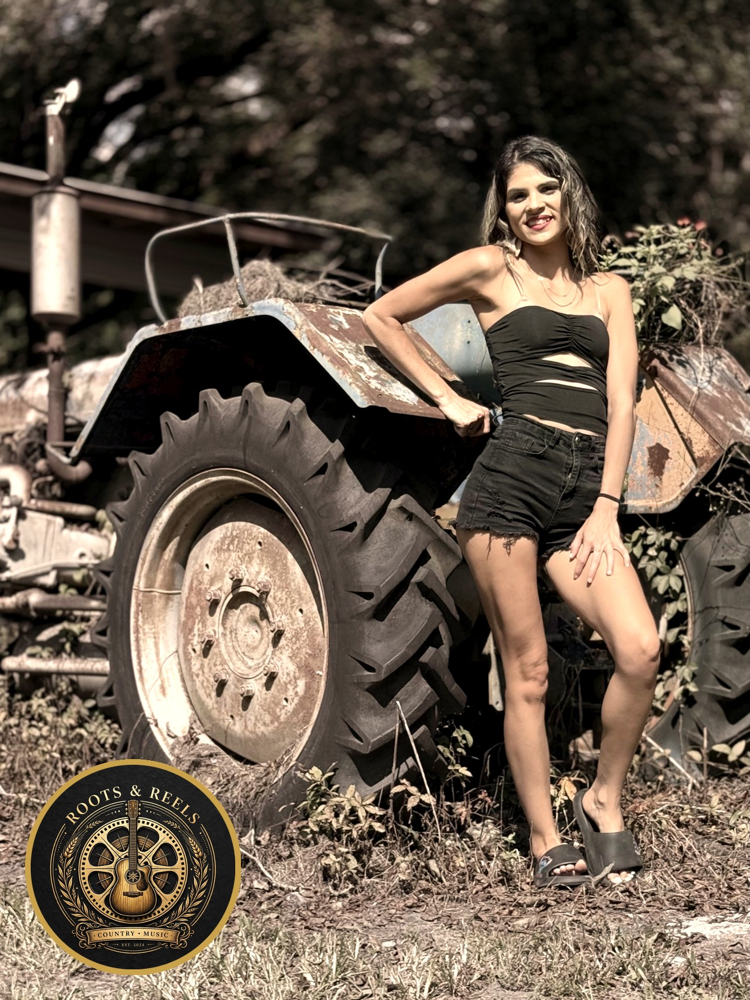
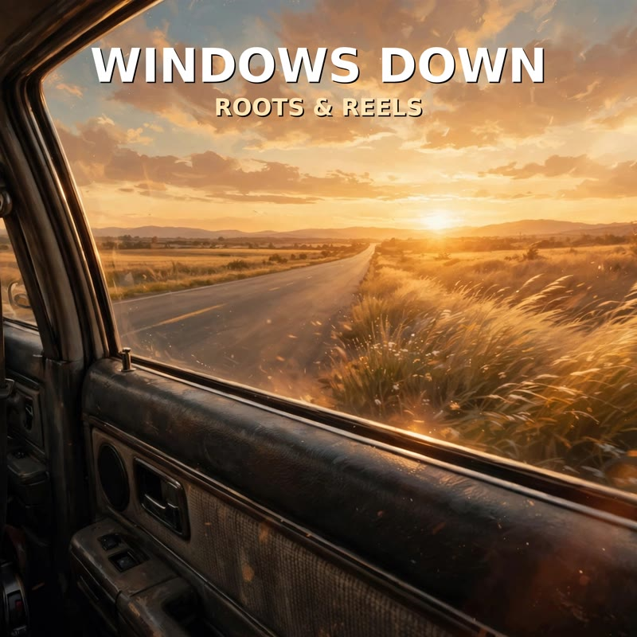
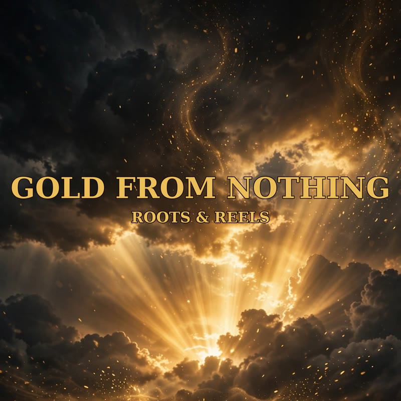
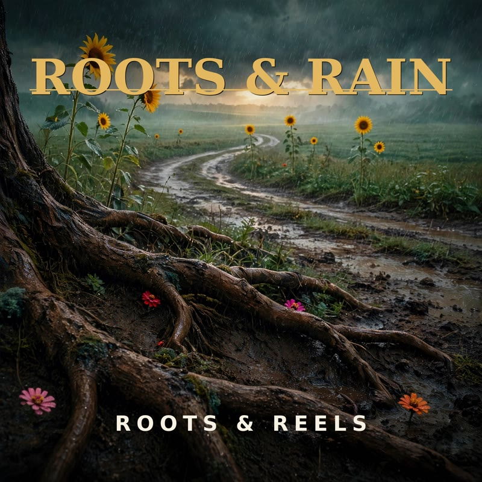
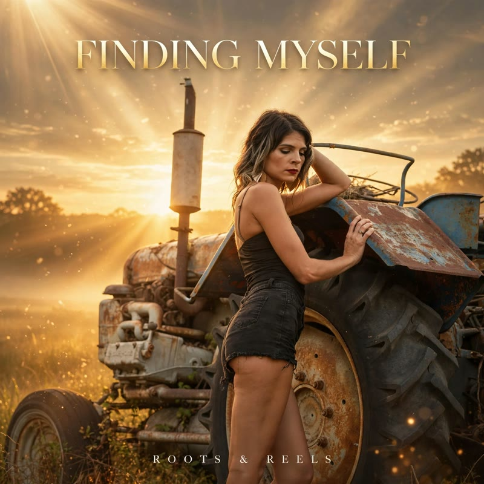
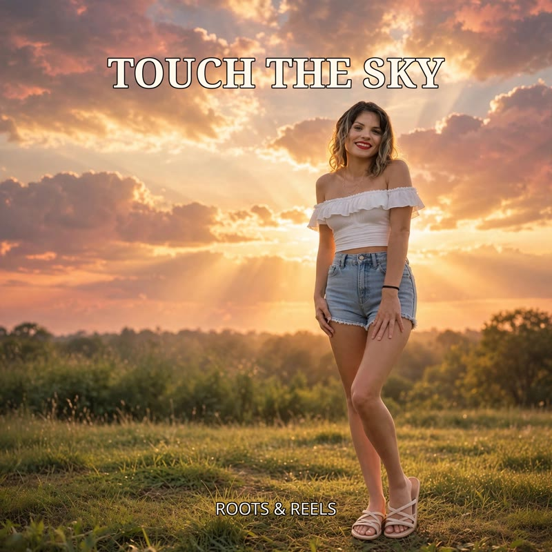
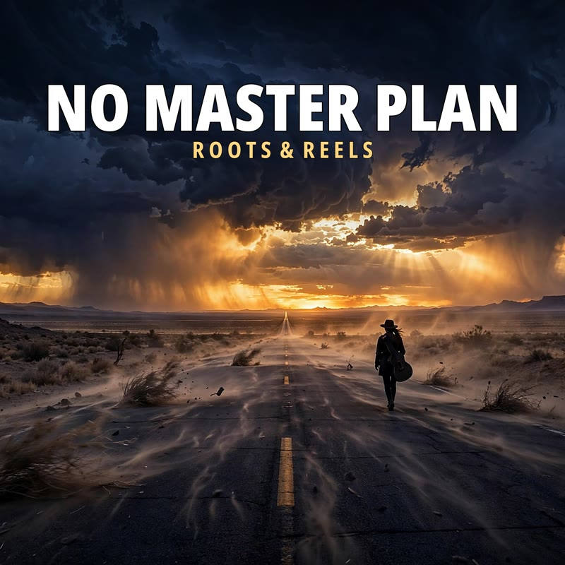
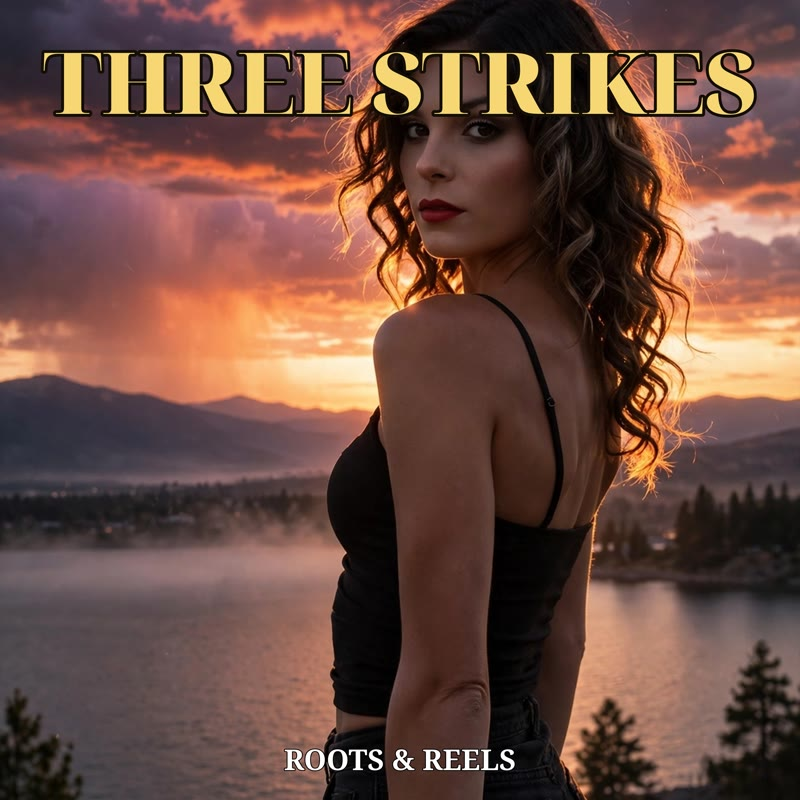
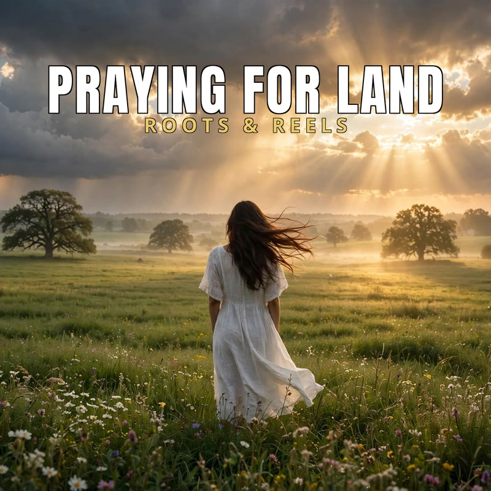
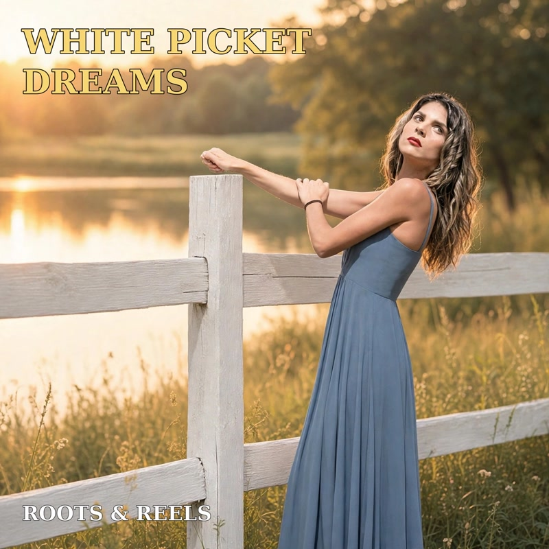

Roots & Reels
Jamie White
Country singer-songwriter — a new original song every day.

Latest releases
Original songs from Jamie White, rooted in country storytelling.
-

01WINDOWS DOWN YouTubeWindows Down — Lyrics
Here, I'm turning the top down wind in my face Out the camper into the next space Let's go Used to write about the heartache pages filled with grays Used to worry about the shadows just trying to find a way Now the river's getting blurry here The past is fading fast I'll just heat up on the asphalt Making memories that last I was living in the waiting Now I'm living for the drive Got that rhythm in the engine Feel so good to feel alive Windows down country breeze Feeling like I'm finally me Roots don't need a zip code Roots just need a soul that's free Yeah, I'm shifting gears Moving on, I'm watching the horizon grow Finding out the way Don't matter just the strength I'm gonna show Yeah, I'm finally home In my own skin Where the real me begins Yeah, it ain't about the rent And it ain't about the wall It's about standing in the center When the walls start to fall Got my own foundation Yeah, I'm building up my own Every single mile I travel feels just like a throne I'm a-looking over shoulders I'm a captain of a ship Feeling every beat of the engine Yeah, I'm loving every trip Yeah, I'm loving every trip Gonna let the spirit rest Leverline just being me Yeah, that's where I wanna be It's the quiet and the chaos It's the spark inside the dark Every little plan I'm growing Yeah, I'm leaving such a mark From the camper to the highway I'm reclaiming all my spades Moving forward with a smile Yeah, I'm winning at this race Windows down country breeze Feeling like I'm finally me Roots don't need a zip code Roots just need a song that's free Yeah, I'm shifting gears Moving on watching the horizon grow Finding out the where the matter Just the strength I'm gonna show Yeah, I'm finally home In my own skin Where the real me begins Yeah, yeah Hear the horizon's calling I'll guess it's just the start I'm taking everything I am And I'm here to draw Yeah, I'm finally me Windows down country breeze, country breeze, finally me Windows down, Windows down Windows down country breeze Feeling like I'm finally me
-

02GOLD FROM NOTHING YouTubeGold From Nothing — Lyrics
Porch lights buzzing on a broke down dream They see the holes, but they don't see the queen Y'all trade your souls for a digital check I'm stacking memories while you're checking your neck Yeah, my account's light, but my spirit's a beast While you're fighting for crumbs, I'm preparing the feast Out on Rust Belt Rhapsody A new religion making gold from nothing is my one true vision So keep your opinions and your counterfeit praise I'm burning brighter in this Southern Fried Haze I'm high on the moment, yeah, I'm high on the now Watch me take the throne, yeah, watch me show you how 'Cause I'm a train, you're a car dying in steel Living in the dirt, but the hunger is real Talk behind my back, while I'm shifting the gear I'm the ghost in your feet, I'm the shit that you fear Yeah, watch me glow, watch me grow, watch me rise While you're looking for the truth in a pack of cheap lies I'm the blueprint, baby, and you're just a trace Try to keep up, but you can't keep the pace You want my static, you want the grid Better learn how to handle the shadow you prig I'm authentic, kinetic, a damn force of nature While you're curating scenes just to look like a skater Or a rapper or a saint, yeah, you're faking the vibe While I'm building an empire, I'm leading my tribe I don't need the silk, I don't need the gold chain I'm growing wildflowers right out of the rain Yeah, they talk the talk, but they walk in my tracks I'm the pioneer, baby, with the knife in the back But I'm still standing tall, yeah, I'm still standing here Disappearing from the hate, making everything clear 'Cause I'm a train, you're a car dying in steel Living in the dirt, but the hunger is real Talk behind my back, while I'm shifting the gear I'm the ghost in your feet, I'm the shit that you fear Yeah, watch me glow, watch me grow, watch me rise While you're looking for the truth in a pack of cheap lies I'm the blueprint, baby, and you're just a trace Try to keep up, but you can't keep the pace Yeah, let 'em talk. Keep talking. I'm already gone. Southern Fried Haze. Just watch the smoke clear.
-

03ROOTS & RAIN YouTubeRoots & Rain — Lyrics
Bought a packet of seeds and a vision in my head Thought they'd pop up perfectly, exactly like I read But the soil was hard and the weather didn't hold And some days the story felt a little bit too cold I was checking every morning, trying to force the bloom Measuring my worth by the space in the room But you can't rush the leaf, you can't force the light You gotta trust the morning after the longest night It might come up jagged, it might come up blue Might be a different version of what I thought I knew But I'm standing in the dirt, keeping faith with the rain Learning how to love the wait And healing through the pain See I wanted a rose, but a marigold grew instead A little bit of sunshine, right there in the bed Reminding me of life, how it rarely goes to plan You get a little chaos and you do the best you can I'm watering the struggle, I'm pulling out the weeds Feeding all the future, planting all the seeds It's a slow unfolding, it's a quiet kind of grace Finding my own rhythm in this wide open space It doesn't matter how fast, just matters that I stay Growing through the seasons and day by day Yeah you can't rush the leaf, you can't force the light You gotta trust the morning after the longest night It might come up jagged, it might come up blue Might be a different version of what I thought I knew But I'm standing in the dirt, keeping faith with the rain Learning how to love the wait And healing through the pain Yeah, let it grow Just let it be whatever is meant to bloom It's gonna bloom for me
-

04FINDING MYSELF YouTubeFinding Myself — Lyrics
I've been walking through the fire trying to figure out who I am Standing on my own two feet, following His plan They try to steer me sideways, try to dim this little light Trying to tell me how to live, telling me what's wrong But the music does something deep inside of my soul It's a fire in my chest that they'll never control I set my sights, speak my own truth Pouring my heart, I built it in my youth Some days it's heavy, some days I feel lost But I'm paying attention and I'm counting the cost 'Cause He's watching over me, showing me the track He wants to start moving, I ain't looking back Lord only knows how far I'll go and He's gonna take me there Got His hands on my path, answering every prayer They can throw their stones and judge but that noise don't bother me Only God can judge and His grace is setting me free Yeah, I'm finding myself and I'm free Yeah, I'm finding my way And I ain't letting go of the music saving my soul today Yeah, yeah, yeah, yeah, yeah, yeah, yeah Out here on my own terms, clearing out the weeds, planting what is real Watering the seeds, no room for the drama, no time for the hate I'm working for my future, shaping up my fate Every video I make, every track that I lay Is a piece of my heart that they can't take away Let them talk behind my back, let them watch from the side I got peace in my step and the Creator as my guide Yeah, the road's been winding Yeah, the climb has been steep But I'm keeping the promises that I vowed to keep Lord only knows how far I'll go and He's gonna take me there Got His hands on my path, answering every prayer They can throw their stones and judge but that noise don't bother me Only God can judge And His grace is setting me free Yeah, I'm finding my soul again Yeah, I'm finding my way And I ain't letting go of the music saving my soul today They thought they could break me, thought they could shake me They didn't know the fire He placed inside me No, they didn't know Now watch me grow Lord only knows how far I'll go and He's gonna take me there Got His hands on my path, answering every prayer They can throw their stones and judge but that noise don't bother me Only God can judge And His grace is setting me free Yeah, I'm finding my soul again Yeah, I'm finding my way And I ain't letting go of the music saving my soul today Yeah, I'm finding myself He's watching over me Only God can judge And I'm right where I'm supposed to be
-

05TOUCH THE SKY YouTubeTouch The Sky — Lyrics
yeah Uh-uh just listen to the story yall, We ain't stopping for nothin, I've walked through the fire, felt the heat of the flame Went through the hard times, put them all to shame Finding myself through the mess and the fray I'm standing tall, yeah I'm clearing the way I got my rock, yeah he's holding me steady When life throws a punch, you know I'm already ready I'm taking the kids, yeah we're leveling up Taking the win, filling up the cup I'm a bad bitch, yeah I know what I'm worth Keep my feet on the ground but I'm owning this earth Can't no one take me down, I'm rising up high I'm shining brighter than ever, watch me touch the sky Yeah I'm feeling alive, I'm bad and it's true Whatever life brings, I'm pushing right through Trying to do my best, never let 'em drop Keep on grinding, til we reach the top Life knocks me down, yeah it hits me real hard But I'm still on my knees, playing God's card Praying for the strength, taking it day by day Not knowing what's coming, but I'm clearing the way Trying not to stress, 'cause stress brings the pain I'm dancing in the sun, while they're stuck in the rain I got my man by my side, he's rooting me on Turning the darkness, into the dawn To be who I am, to be who I want This is the life God gave, so I'm moving to the front I'm a bad bitch, yeah I know what I'm worth Keep my feet on the ground but I'm owning this earth Can't no one take me down, I'm rising up high I'm shining brighter than ever, watch me touch the sky Yeah I'm feeling alive, I'm bad and it's true Whatever life brings, I'm pushing right through Yes I'm a star, what he wants We're going to the top Ain't nothing gonna stop me now
-

06NO MASTER PLAN YouTubeNo Master Plan — Lyrics
I find a little space inside, inside the day And let the heavy world just drift away No place that I am really forced to be Just finding something new to finally see The dust is dancing in a beam of light And everything is feeling almost right Just waiting for a feeling to begin And let the music come on rushing in Time on my hands now I make a little sound Time on my hands now We turn it all around Time on my hands now The melody is found Time on my hands now We are finally bound Bound, bound, bound, bound, bound The clock is ticking, buddy Doesn't care about the floating circles in the air I have no master plan on things to prove Just finding out exactly how to move A quiet space where nothing is required And that is where I'm getting so inspired And empty out becomes a golden chance To lose myself and let the spirit dance Time on my hands now I make a little sound Time on my hands now We turn it all around Time on my hands now The melody is found Time on my hands now We are finally bound Bound, bound, bound, bound, bound So while I have this time I can see exactly what it means To just be free We make some more music in the quiet And turn the silence into a riot Time on my hands now Time on my hands now Time on my hands now Time on my hands now
-

07THREE STRIKES YouTubeThree Strikes — Lyrics
[Intro] (Acoustic guitar picking solo, a slow rolling 808 drop creeps in) Yeah... some people think they're being a friend, But really they're just dragging you down. Three strikes, and you're out. [Verse 1] Back in the day we were thick as thieves Swearin' on our lives we'd never up and leave You were two years older, actin' like the guide Always had your back right there by my side Then the cracks started showing, the names started dropping Backstabbing habits that you never stopped popping Thinking you could sneak while I wasn't in the frame Trying to play my man like a little parlor game! [Chorus] Oh, ride or die was just a joke you played Chasing shadows in the mess that you made Thought we'd go the distance since the fourth grade hall Now I'm standing tall while I watch you fall Yeah, you thought you were slick, thought you wore the crown Now you're sitting all alone and trying to track me down! [Verse 2] Lord help that chick now, look at where you're at Sitting all alone, yeah, how do you like that? Even your man tried to step in and mend it Tried to fix the mess, but you just went and ended it Are you really that lonely? I just don't understand You couldn't even apologize for the underhanded I gave you chance one, gave you chance two Third time's the charm, I am done with you! [Bridge] (Beat strips back to just a steady stomp and clap) I thought we were sisters for life, Thought we'd weather any storm... But you can't reason with a wildfire, And I'm done trying to grease the flames. Protecting my peace? That's the only game I'm playing now. [Chorus] Oh, ride or die was just a joke you played Chasing shadows in the mess that you made Thought we'd go the distance since the fourth grade hall Now I'm standing tall while I watch you fall Yeah, you thought you were slick, thought you wore the crown Now you're sitting all alone and trying to track me down! [Outro] (Beat drops back in full, guitars soaring) Third strike... you're out. In the end, I was right. Protecting my peace. Delete. Block. Walk away. Case closed. (Acoustic strum fades out)
-

08PRAYING FOR LAND YouTubePraying For Land — Lyrics
Yeah, it's a long road But we still movin, From the dirt to the sky Just watch me grow, Yeah, (Verse 1) I'm stacking memories in a tiny space, a camper on the plot Living life in the shadows of the dreams that I haven't got Yeah the silence is loud when I'm tucking them in at night Just me and the kids, trying to make sure everything's right I lost their father, yeah my fiancé, my heart took a dive Had to learn how to breathe, had to learn how to stay alive Some days the depression hits like a wall made of stone But I look at their faces, and I know I ain't really alone I'm praying to the man upstairs, talking through the tears Asking for a house and some land to wash away the years (Chorus) We're pushing through the rain Yeah we're chasing down the sun Even when the days get heavy Yeah the battle's never done Got my hands in the soil, finding peace in the green Keeping it stone looking clean, living the life in between Yeah we're coming up, keeping our heads held high From the camper to the castle, watch us touch the sky (Verse 2) Yeah, I take a walk to the grave, keep the flowers looking bright It's the only way I know how to keep his memory light I talk to him daily, tell him 'bout how the babies grow It's a rhythm in my soul, it's the only way I know Then life throws a curve, met a heart that was broken too Someone walking the same path, someone feeling just as blue But we found a little spark in the middle of the pain Two souls looking for shelter from the heavy pouring rain Now he means a whole lot, yeah he's steady in the storm Help me keep the fire lit, help me keep the spirit warm (Bridge) It ain't about the house, it ain't about the land It's about the strength I'm holding in the palm of my hand From the lowest of lows to the hope in my chest I'm taking it all, putting it to the test Got 'em listening close, waiting for the sign One day at a time, yeah I know that it's mine (Chorus) We're pushing through the rain Yeah we're chasing down the sun Even when the days get heavy Yeah the battle's never done Got my hands in the soil, finding peace in the green Keeping it stone looking clean, living the life in between Yeah we're coming up, keeping our heads held high From the camper to the castle, watch us touch the sky Yeah, Yeah, It's a process, Keep growing, Keep praying, We ain't stopping now, Note: audio outro also has ad-libbed "From the camper to the land / We're coming" lines after "We ain't stopping now" (heard in transcription) — confirm whether to include in captions.

09WHITE PICKET DREAMSYouTubeWhite Picket Dreams — Lyrics
(Verse 1) Life can be really tough, but I am strong I know how to break through when everything goes wrong Got some faith in my heart, got some grace on my mind Trusting God's gonna lead me just right on time With every breath that I draw, every love that I give And all the time that I share just trying to live I know the road gets heavy and it's hard sometimes But we put our heads down, stay on our grind (Chorus) Yeah, we're gonna make it, even fake it till we break it The future is ours and no one's gonna take it You gotta stay strong, keep on moving ahead Walk through the fire with the words that you said Life can be tough, but I'm standing tall Yeah, I am strong and I'll break through it all (Verse 2) This isn't just about me, no, this is about them My little family, my anchor and gem I'm out here building from the ground up right now Doing whatever it takes to make 'em all proud I want that stability, solid and true A big yard and a house in the morning dew A white picket fence shining bright in the sun Yeah, I want the whole dream, I want the dog, I want it all done (Bridge) Got my little family right here by my side And the one watching over us, being our guide Keeping us safe with His mercy and grace Putting a smile on each other's face We're gonna rise, yeah, we're gonna see The life that we're planting for you and for me (Chorus) Yeah, we're gonna make it, even fake it till we break it The future is ours and no one's gonna take it You gotta stay strong, keep on moving ahead Walk through the fire with the words that you said Life can be tough, but I'm standing tall Yeah, I am strong and I'll break through it all --- Meaning: her family, her faith, her dream of stability — a house, a yard, a white picket fence, a dog. The bridge's "the one watching over us, being our guide" is Austin. Video creative: home/fence/sunrise/American-dream imagery; do NOT use actual family photos (standing rule) unless she approves.
Privacy Policy
Roots and Reels PublisherRoots and Reels Publisher is a content-publishing tool by Jamie White. It is used solely to publish Jamie White’s own original music videos to her own TikTok account.
The app collects only the TikTok account authorization needed to publish that content. No data is sold or shared.
Privacy questions may be directed to Secret_gurl70@yahoo.com.
Terms of Service
Roots and Reels PublisherRoots and Reels Publisher is provided as-is for publishing the owner’s own content. The owner is responsible for the content published through the app.
TikTok’s own terms also apply to the use of TikTok and content published to the platform.